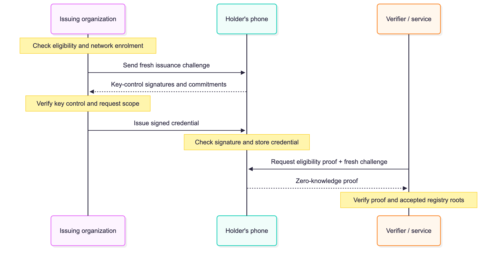
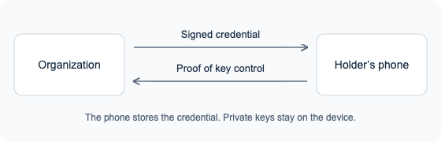
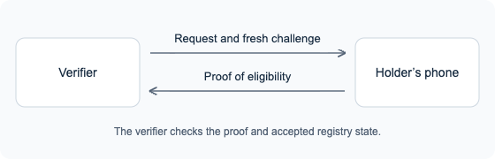
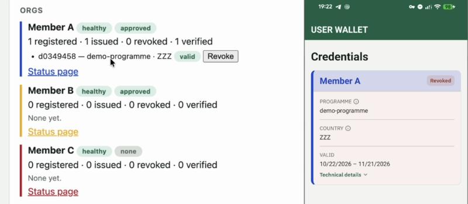

This post was kindly reviewed by Moven, Zoey, Nam, and John Guilding.
The article is part of a series on decentralised identity and private payments for humanitarian assistance on Ethereum. Read the overview: Decentralized Identity and Private Payments on Ethereum.
Summary
When one organisation approves a person and another checks that approval, the check often reveals more than what is required: the verifier learns who issued the credential, and a revocation lookup can tell the issuer where the credential is used. We built two registries on Ethereum that address both for zero-knowledge credentials. An approved-issuer set lets a proof show that its issuer is in the set without revealing it, and one shared revocation registry lets the same proof show that the credential is absent from the revoked list. Verification runs off chain and costs no gas. We built both for a humanitarian aid pilot, and ran them on testnet with two network members.
The problem
The pilot we built for is an aid distribution coordination network. Several organisations approve beneficiaries for their own programmes, and a service run by one organisation may need to know whether another has approved a person. In the pilot’s prior setup, organisations confirmed eligibility by exchanging beneficiary records with each other, and verifiers queried a list held by one operator.
A verifying service needs five pieces of information:
- The approval came from an organisation the network trusts
- It covers the programme and country the service runs
- It is within its validity period
- It has not been revoked
- The person presenting it controls the keys bound to the credential
The service does not need the person’s record, and if it accepts approval from any organisation in a trusted group, it does not need the name of the approving organisation either.
Any approved issuer can issue the credential. The service that checks it asks only whether it is valid.
Signed credentials remove the record exchange, because the person carries the approval and presents it. Two leaks remain in common designs. To check a signature, the verifier needs the issuer’s public key, so every presentation reveals the issuer. To check revocation, the verifier either asks the issuer, which can tell the issuer where and when the credential is used, or reads a status entry that the credential points to. That entry is the same in every presentation, so verifiers can link presentations by it.
A zero-knowledge proof can hide the credential, but the proof still has to be checked against a list of trusted issuers and a list of revoked credentials. If each issuer keeps its own lists, the list a verifier checks names the issuer again.
When someone uses a credential to access a service, the verifier needs to know that it came from a trusted organisation and hasn’t been revoked. But verifying those facts shouldn’t require revealing which organisation issued it or notifying the issuer each time it’s used.
For example, a person might need to prove they’re eligible to attend an event or access a service. The verifier only needs to know that an approved organisation issued a valid credential, not which one.
This led us to a question: How can someone prove that an approved organisation issued their unrevoked credential, without revealing the issuer or allowing the issuer to learn where it’s used?
Why it matters
The same problem appears wherever multiple organisations approve people independently and need to accept each other’s approvals. The project’s use-case notes walk through assistance programmes run by several agencies, professional licensing across regulators, and concessions granted by several assessment bodies. For example in the licensing use case, a regulator’s identity can itself reveal a person’s profession.
Revocation adds a second layer of complexity. Credentials may expire when programmes close or circumstances change. A verifier that cannot check withdrawal privately either accepts credentials that may have lapsed or requires communication with the issuer, which reveals to the issuer where the credential is used.
In the pilot’s prior setup, each record exchange copied a person’s data to a secondary organisation, and the operator holding the list saw every eligibility check.
What we built
We built two registries and the circuit checks that consume them. The approved-issuer set holds the signing keys of approved issuers, and the revocation registry holds commitments of revoked credentials. Inside one zero-knowledge proof, a holder shows that its credential’s issuer key is in the first and that its revocation commitment is absent from the second. Network governance decides who may issue, and each issuer decides whom to approve and what to revoke. The registries depend on Ethereum for shared state, ZK-Kit’s Noir Merkle libraries for the in-circuit checks, and Semaphore for anonymous write authorisation.

Issuance writes nothing on chain. A verifier reads two roots and never contacts the issuer.
The approved-issuer set is a LeanIMT, an incremental Merkle tree, whose leaves are Poseidon hashes of issuers’ Baby Jubjub public keys. ApprovedIssuerSet.sol holds it on chain. Each member can publish up to eight keys from its own auth address, and governance can retire any of them, which turns its leaf to zero. A holder reads every leaf and builds its membership witness locally, so it never asks which leaf is its issuer’s. In the circuit, the key that verifies the credential’s EdDSA signature is the key hashed into the Merkle path, and only the resulting root is public.
The revocation registry is a LeanIMT+, a Merkle tree from PSE that supports non-membership proofs. At issuance, the holder’s phone generates a 32-byte secret r and sends the issuer a commitment to it, with the matching public key and a signature proving ownership. The issuer signs the commitment into the credential and records it. Revoking means publishing that commitment to the tree. At presentation, the holder proves that the commitment is absent from the tree and that it holds the key behind it. The issuer never holds r, so it cannot produce that proof for the holder.

Issuance: the phone proves control of its keys, including the revocation key, and stores the signed credential.
The network keeps a single revocation registry shared by all issuers, because a per-issuer registry would name the issuer as soon as a verifier chose which one to query. CredentialRevocationRegistry therefore checks a root with no registry argument. Each write carries an anonymous Semaphore proof that an approved member sent it. Sent from a fresh address through a bundler that several members share, a revocation shows on chain that a member acted, without showing which one.
Both contracts accept the current root and any root superseded within a window each deployment sets, one hour by default, so a proof built just before an update still verifies. The credential SDK returns both roots unchecked, and the verifier must check them on chain before accepting a presentation, as the reference verifier does. On chain sit issuer keys, each linked to the member that published it, plus revoked commitments and roots. Credentials, secrets and proofs stay off chain. Admitting a new member needs a majority of current members through the governance Safe.

Presentation: the verifier sends a request with a fresh challenge, then checks the returned proof against the roots it accepts on chain.
Integration examples
The following examples demonstrate issuer membership, private revocation, and on-chain root verification.
Install the dependencies:
npm install @coordination-network/credential @coordination-network/issuer-set @coordination-network/revocation-registry viemSave each example as an .mts file and run it with npx tsx <filename>.
Issuer membership
Generate a membership witness proving that an issuer belongs to an approved set. The witness stays with the holder, while only the root is public.
import { LocalCredentialSigner } from "@coordination-network/credential"
import { ApprovedIssuerSet } from "@coordination-network/issuer-set"
// Demo issuer signing keys
const keys = await Promise.all(
["issuer-a", "issuer-b", "issuer-c"].map(
(secret) => new LocalCredentialSigner(secret).getPublicKey()
)
)
const issuers = new ApprovedIssuerSet(keys)
const witness = issuers.generateProof(keys[1])
console.log("Issuer in set:", issuers.verifyProof(witness)) // truePrivate revocation
Generate a non-revocation witness showing that the holder’s commitment is absent from the revocation registry.
import {
deriveRevocationCommitment,
generateRevocationSecret,
} from "@coordination-network/credential"
import { RevocationRegistry } from "@coordination-network/revocation-registry"
const holderCommitment = deriveRevocationCommitment(
generateRevocationSecret()
)
const registry = new RevocationRegistry()
// Revoke a different commitment
registry.revoke(
deriveRevocationCommitment(generateRevocationSecret())
)
const witness = registry.generateProof(holderCommitment)
console.log(
"Not revoked:",
witness.proofType === 1 && registry.verifyProof(witness)
) // trueOn-chain root verification
Reconstruct each tree from its public leaves on-chain and check whether the deployed contract accepts the resulting root. The example below uses the issuer set.
import { ApprovedIssuerSet } from "@coordination-network/issuer-set"
import { createPublicClient, http, parseAbi } from "viem"
import { sepolia } from "viem/chains"
const client = createPublicClient({
chain: sepolia,
transport: http("https://ethereum-sepolia-rpc.publicnode.com"),
})
const address = "0x52b86Cacd9bA551C6bEDdc9D488681E4F952D873"
const abi = parseAbi([
"function getLeafCount() view returns (uint256)",
"function getLeaves(uint256 start, uint256 end) view returns (uint256[])",
"function isValidIssuerSetRoot(uint256 root) view returns (bool)",
])
const issuers = await ApprovedIssuerSet.fromContract({
getLeafCount: () =>
client.readContract({
address,
abi,
functionName: "getLeafCount",
}),
getLeaves: async (start, end) => [
...(await client.readContract({
address,
abi,
functionName: "getLeaves",
args: [BigInt(start), BigInt(end)],
})),
],
})
const accepted = await client.readContract({
address,
abi,
functionName: "isValidIssuerSetRoot",
args: [issuers.root],
})
console.log("Live root accepted:", accepted) // true- The revocation root follows the same flow: rebuild the tree with
RevocationRegistry.fromLeavesfrom@coordination-network/revocation-registryTypeScript package and check the root withisValidRooton theCredentialRevocationRegistrycontract.
How it is different
Two choices set this design apart from per-issuer lists: issuers are proven to be in one shared set, and all revocations share one tree, so neither check names the issuer.
The revocation flow adapts PSE’s design for non-membership revocation. Members of this team co-authored OpenAC, an anonymous-credential design in which a holder proves facts about a credential without revealing it.
What an adopter gets
The packages provide issuer hiding and private revocation, with the core components ready to integrate.
What’s included:
- TypeScript packages to build issuer and revocation trees and generate their witnesses.
- Solidity contracts to maintain authoritative roots on-chain.
- Noir circuit examples showing how both witnesses are consumed in a single proof using ZK-Kit’s Noir libraries.
- Cross-language tests checking that TypeScript and Solidity produce matching roots for both trees, and that issuer-set constants match the circuit.
What adopters control:
- Who can issue credentials and revoke them.
- Registry access rules and root validity windows. Any contract can create its own registry through the shared Revocation service.
- The issuer-set package, which can be used independently of the on-chain contracts.
What adopters need to consider:
- Toolchain: Pin the Noir and Barretenberg versions and distribute the circuit artifact to verifiers.
- Infrastructure: Provide a trusted RPC endpoint and gas for issuer key publication and revocations.
- Key management: Issuers must securely manage Baby Jubjub EdDSA keys, which commodity KMS and HSM products do not currently support natively.
- Network dependency: The approved-issuer set contract checks authorization against the network’s member registry. Deployments outside the network must replace this check.
Use cases
Demonstrated
In the Sepolia demo, two network members ran the reference apps on one Android phone. In the guide’s steps, one member issues a credential and the other checks eligibility. After a revocation, the wallet reports the credential revoked and the next check returns not eligible. The proof never names the issuer, though with two members a verifier that is one of them can infer the other. The recorded run differs: the issuing member runs the first check, and the check after revocation is not recorded. The revocation registry used in that run holds one revoked commitment on testnet. Locally, yarn stack --check plays onboarding, issuing, proving and revoking against three member servers. These were testnet and local runs, with no real users.
The wallet’s consent screen in the recorded demo, listing what the verifying member learns and what stays hidden. In this run the credential came from the verifying member itself.

Revoking from the demo dashboard (left). The wallet then shows the credential as revoked (right).
Candidate uses, not yet tested
Each use case presents a condition which requires several issuers in an approved set.
- Aid eligibility across organisations. A service point should be able to accept another agency’s approval without learning which agency gave it, if the agencies agree shared programme and country values.
- Professional licensing across regulators. An employer should learn that a person holds a current licence of the class it asked about, without learning which regulator issued it, if the regulators agree licence-class values.
- Concessions across assessment bodies. A transport operator should learn that a person is entitled to a concession class without learning which body assessed them.
Limitations and next steps
Limitations
- Scope of testing. The system has been exercised end to end on Sepolia with two network members, one holder and one Android phone, and on a local chain with three member servers. It has not yet run with production users.
- Mobile performance. Proof generation works on tested Android phones with as little as 4 GB RAM, though performance varies by device. See the benchmarks.
- Audit status. The contracts and circuit have been internally reviewed and tested, but not yet externally audited. The circuit includes a local fix to the upstream EdDSA verifier, which adds a constraint missing at the version used.
- Issuer anonymity depends on the deployment. The proof hides which issuer signed, but anonymity depends on how many issuers plausibly serve the requested programme and country. The verifier’s own knowledge also matters, and several keys may belong to one organisation. A proof against an older root may narrow the candidates.
- Revocation propagation. To keep proofs stable while the tree changes, the registry accepts recently superseded roots for one hour. A revoked credential can still verify against such a root until that window closes.
- Concurrent revocation writes. Each revocation references its position in the sorted tree. If another write lands first, that reference can go stale and the transaction must be resubmitted.
- Shared revocation authority. Revocations are written anonymously, so the registry cannot tell which member revoked a credential. Any approved member can therefore reverse a revocation. We chose this so that a mistaken revocation can always be corrected.
- Tree capacity. The circuit supports trees of depth 20, roughly one million leaf slots per tree. All issuers share the revocation tree’s capacity.
- Trusted infrastructure. Verifiers rely on the RPC endpoint they read roots from and on the circuit artifact they were given, as with any system that reads chain state.
Next steps
- Publish periodic tree snapshots, which the revocation-registry package can already export and import, so holders can sync without replaying every revocation.
- Explore epoch-based revocation trees, so proving cost and the depth cap apply to recent revocations only.
- Evaluate proving backends other than Barretenberg UltraHonk.
Try it, talk to us
npm install @coordination-network/issuer-set @coordination-network/revocation-registry @coordination-network/credential @coordination-network/contracts viemQuickstart: integration.mdx
Code repository: github.com/ethereum/coordination-network
Running a coordination programme and want to pilot this? Contact epic@ethereum.org
Sources
- Credential body, issuance, verification and the approved-issuer root: specs/03-vc-issuance.md
- Revocation secret, commitment, root history and privacy properties: specs/04-revocation.md
- Guarantees, accepted threats, unmeasured proving cost and issuer key custody: specs/threat-model-phase-1.md
- Circuit constraints, patched EdDSA verifier and pinned toolchain: packages/circuits/README.md
- ZK-Kit Noir dependencies and depth-20 caps: Nargo.toml and main.nr
- Key publication, eight-key cap, retirement and root window: ApprovedIssuerSet.sol
- One shared revocation registry, anonymous member writes and majority admission: contracts README and CredentialRevocationRegistry.sol
- Revocation service, registry creation and root history: revocation contracts README
- TypeScript trees, witnesses and cross-language tests: issuer-set and revocation-registry
- Roots returned unchecked, and the earlier SD-JWT prototype: credential README
- Reference verification sequence: verify.ts
- Demo steps and recorded run: Sepolia demo guide. Contracts from that run: ApprovedIssuerSet and CredentialRevocationRegistry
- Local stack check: integration.mdx
- Use-case notes: use-cases.mdx
- Licence and packages: LICENSE and @coordination-network on npm
- OpenAC: Eagen et al., Cryptology ePrint 2026/251
- LeanIMT: LeanIMT paper. LeanIMT+: PSE blog
- Revocation approaches: Revocation in zkID and privacy-preserving revocation with non-membership proofs
- Semaphore: docs.semaphore.pse.dev. ZK-Kit Noir libraries: zk-kit.noir